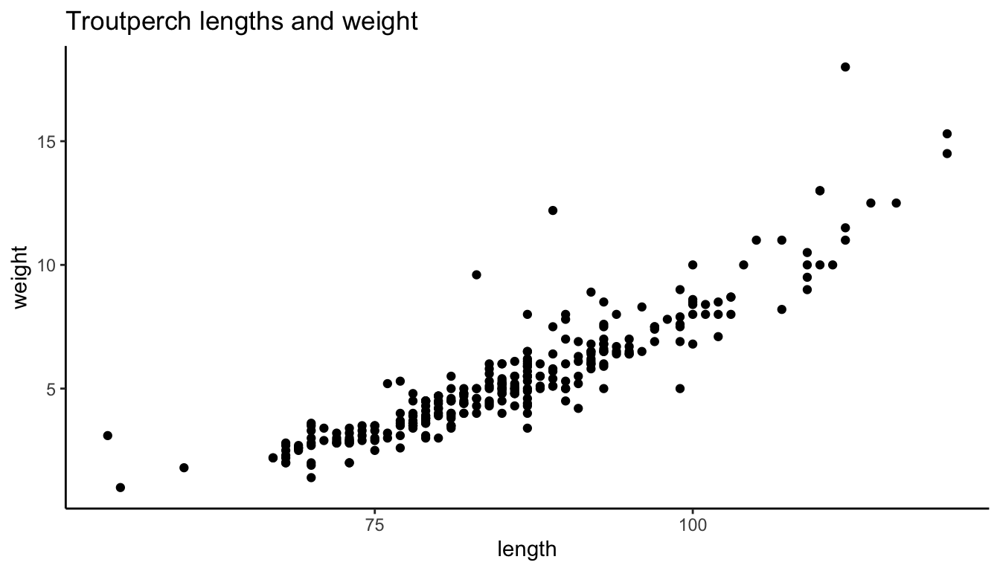

Question- How does fish length predict fish wieght for trout perch (across all sample years)
#filtering data, importing csvfish_df <-read_csv(here("data", "ntl6_v12.csv")) %>%#filtering rows that have "TROUTPERCHfilter(spname =="TROUTPERCH") %>%#selecting specific rowsselect(spname,year4,length,weight) %>%#renaming columnns rename(year = year4)
Rows: 349229 Columns: 15
── Column specification ────────────────────────────────────────────────────────
Delimiter: ","
chr (8): lakeid, gearid, spname, sampletype, indid, fishpart, spseq, flag
dbl (5): year4, depth, rep, length, weight
lgl (1): sex
date (1): sampledate
ℹ Use `spec()` to retrieve the full column specification for this data.
ℹ Specify the column types or set `show_col_types = FALSE` to quiet this message.
#View(fish_df)
Hypothesis
Linear models describes linear relationship between variable and predictor Null = the predictor variable does not predict the reponse variable
Alt = the predictor variable does predict the response variable
Null Hypothesis: Mathematical: Biological:
Alternative Hypothesis Mathematical: Biological:
# 200 missing rows for weight# have all rows for length gg_miss_var(fish_df)
When running the function gg_miss_var, we have found that there are 200 missing values for weight.
#using tidyverse to filter out any Na values in the weight column troutperch_Na <- fish_df %>%drop_na(weight)View(troutperch_Na)
#quick visal of the data ggplot(data = troutperch_Na, aes(x = length, y = weight)) +geom_point()+theme_classic()

Diagnostic Plot
Homoscedasticity (constant variance) of residuals
Diagnostic plots also tell you are there any outliers
Diagnostic plots allow you to check the assumptions of linear models, if the plot looks good, look at the model summary to determine mdoel estimates, R^2, p-values
modelobject <-lm(weight ~ length, data = troutperch_Na)par(mfrow =c(2,2))plot(modelobject)
###### when looking at the Residual vs Fitted, it looks Heteroscedasticity # Normal Q-Q, the data looks normal # scale -location, is the same thing like Residuals vs fitted # Residuals vs leverage
The diagnostic plot “Residual vs Fitted” visually implies
The diagnostic plot “Normal Q-Q” visually implies
The diagnostic plot “Scale-Location visually implies
The diagnostic plot “Resiudal vs Leverage” visually implies
#model_squares_table <-tidy(model_sqaures) %>%mutate(p.value =case_when(p.value <0.001~"<0.001")) %>%flextable() %>%#need to change the weight name to luike fisset_header_labels(df ="Degrees of Freedom", sumsq ="Sum of squares",meansq ="Mean squares",statistic ="F-statistic",p.value ="p-value" )model_squares_table
term
Degrees of Freedom
Sum of squares
Mean squares
F-statistic
p-value
length
1
1,432.2877
1,432.287687
1,280.844
<0.001
Residuals
288
322.0525
1.118238
In 1-2 sentences, describe how the ANOVA table relates to the information you get from the summary() object
plot_predictions <-ggplot(data = troutperch_Na, aes(x = length, y = weight)) +# first plot the underlying data from maples_datageom_point() +# then plot the predictionsgeom_line(data = predictions, aes(x = x, y = predicted), color ="green", linewidth = .9) +# then plot the 95% confidence interval from ggpredictgeom_ribbon(data = predictions, aes(x = x, y = predicted, ymin = conf.low, ymax = conf.high), alpha =0.2) +# theme and meaningful labelstheme_bw() +labs(x ="Length (mm)",y ="weight (g)")plot_predictions